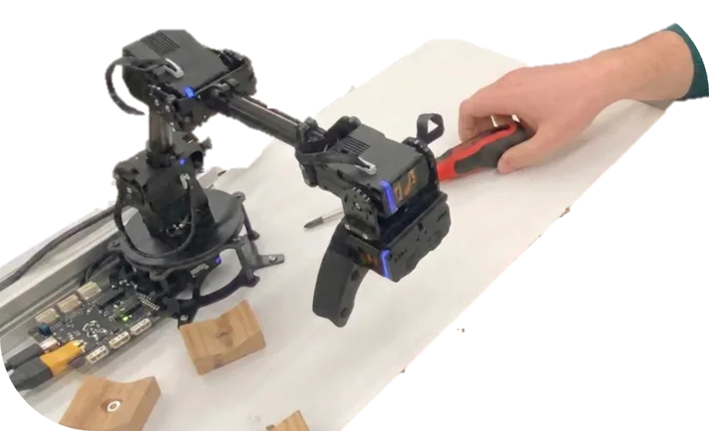

Sep 2013 – Jul 2021
Abitur · General qualification for university entrance
Gymnasium Kreuzgasse · Cologne, Germany
French–German bilingual school with an emphasis on sciences and languages. Final grade: 1.3 (excellent).
My dream is to build humanoid robots that can see, hear, feel, smell and taste the world as we humans do.
BSc in Product Engineering - Pursuing MSc in Robotics at TU Delft

I’m a robotics master’s student at TU Delft, building on a BSc in Mechanical Engineering – Product Engineering and Context at TH Köln.
What draws me to robotics is the combination of mechanics, sensing, software and control needed to make machines understand and interact with the world around them. I’m particularly interested in robotic perception: enabling robots to see, hear and feel their environment.
My projects have explored these different senses through computer vision for an autonomous agricultural robot, tactile sensing with conductive textiles, and auditory perception in my bachelor’s thesis on the Furhat social robot. During my internship at Furhat Robotics in Stockholm, I worked across hardware and software prototyping, including the 360° Furhat mechanism, Furpack and a multi-robot a cappella demonstration.
Today, I’m studying the MSc Robotics at TU Delft, where I’m expanding my knowledge across robotics and started the skin team of RSA Project Echo, focused on tactile sensing and protective soft skin for humanoid robots.
Delft University of Technology · Delft, Netherlands
Robot dynamics, control, perception and planning.
Robotics is a comprehensive programme combining robot dynamics and control, machine learning, perception, planning, robot software, and human–robot interaction.
Cologne University of Applied Sciences / TH Köln · Cologne, Germany
Project-based engineering programme. Final grade: 1.1 (excellent).
Product Engineering and Context is a project-based programme combining mechanical engineering, product development, robotics projects, and interdisciplinary sustainable design.
Gymnasium Kreuzgasse · Cologne, Germany
French–German bilingual school with an emphasis on sciences and languages. Final grade: 1.3 (excellent).
Furhat Robotics · Stockholm, Sweden
Full-time internship (Apr–Sep 2025) and bachelor’s thesis (Oct 2025–Apr 2026).
Redesigned the mechanical implementation of MEMS microphones, including mounting, compliant support and acoustic channels. Built an automated speech-recognition evaluation. Mean word error rate fell from 18.3% to 16.6%, a reported 9.3% relative reduction.
Read the audio case study →Developed hardware and software concepts for social robots within the prototyping team. Worked on projects including Furpack and a 360-degree mechanism for Furhat.
Cologne University of Applied Sciences / TH Köln · Cologne, Germany
Coached engineering students and helped teams organise their projects.
Coached students in engineering courses and projects. Acted as Scrum Master, helping student teams organise their work and develop their projects.
TH Köln ↗Perfect-Id GmbH · Cologne, Germany
Worked across marketing, sales, and business development for privacy-focused data solutions, including customer acquisition, planning, and process optimisation. View job reference (in German) ↗
Taktsoft Campus Talents · Remote
Developed and planned social media for actyvyst GmbH and Taktsoft Campus Talents.
Wolt Enterprises Germany · Cologne, Germany
Delivered food by bicycle in Cologne.

A textile contact sensor (BSc project), with separate ongoing humanoid skin research in Project Echo.

 Bachelor’s thesis
Bachelor’s thesis
A mechanical microphone redesign with a reported 9.3% relative reduction in mean word error rate.
 Internship project
Internship project
A purpose-built robot backpack developed through physical prototypes, supplier samples and revision packs.
 Internship project
Internship project
A belt-driven rotating-base prototype using Furhat’s existing visual tracking, with cable and integration limits.

BSc projectA ROS 2 cobot that connects speech, vision and manipulation to fetch tools on request.
 BSc project
BSc project
Camera-based detection reduced reported retrieval time per metre by approximately 18× on the same test rover.
TH Köln · Cologne, Germany
Contributed to committees, communication with professors, events and advocacy for key academic-community topics.
TH Köln · Cologne, Germany
Supported students preparing for exchange semesters at TH Köln.
TH Köln · Cologne, Germany
Evaluated teaching concepts and co-led a workshop on new teaching methods at the Day of Excellent Teaching.
Lern-Fair e.V.
Occasionally volunteer as a tutor for educationally disadvantaged pupils and apprentices aged 7 to 27.
Enactus Köln · Cologne, Germany
Member of a student association focused on social entrepreneurship and community engagement.
Dachzeltnomaden · Ahr Valley, Germany
Supported recovery after the Ahr Valley floods through construction work, social media, and organisation. View certificate (in German) ↗
Senioren Herz Jesu
Supported care activities and musical entertainment during an internship at Senioren Herz Jesu.
Questions, opportunities, or just want to connect? Feel free to reach out.